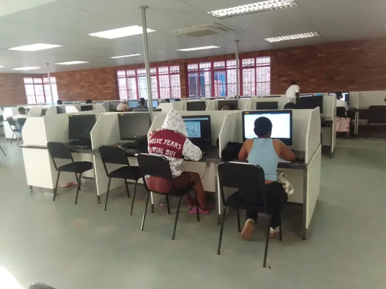
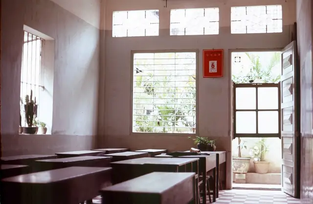
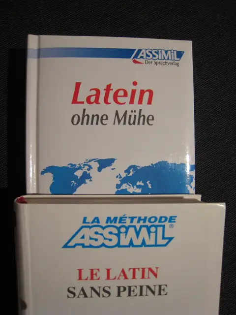

$ soliman --langues --informatique
Langues vivantes
et informatique, à Soliman.
Centre de formation privé agréé, créé en 2022. Français, anglais, allemand, italien, espagnol et informatique.

salle_info.jpg · illustrationFRBonjour
ENHello
DEHallo
ITCiao
ESHola
</>
Informatique : modules et niveaux à confirmer
4,7/5 · 37 avis Google Maps
relevé le 30/09/2026
relevé le 30/09/2026
- ✔ Centre privé agréé · créé en 2022
- ✔ 5 langues + informatique
- ✔ Mercredi jusqu'à 18h00
- ✔ Tarifs et calendrier : à confirmer

classe.jpg · illustration// inscription
Réservez votre place
Choisissez la formation : la demande part sur le WhatsApp du centre (+216 24 095 117).

methodes.jpg · illustrationHoraires
| Lundi | à confirmer |
| Mardi | à confirmer |
| Mercredi | jusqu'à 18h00 |
| Jeudi | à confirmer |
| Vendredi | à confirmer |
| Samedi | à confirmer |
| Dimanche | à confirmer |
Horaire relevé sur la fiche Google le 30/09/2026. Autres jours et horaires complets à confirmer avec l'établissement.
Adresse : Soliman (adresse exacte à confirmer)
Tél. : +216 24 095 117 · +216 26 096 107 · +216 20 807 731